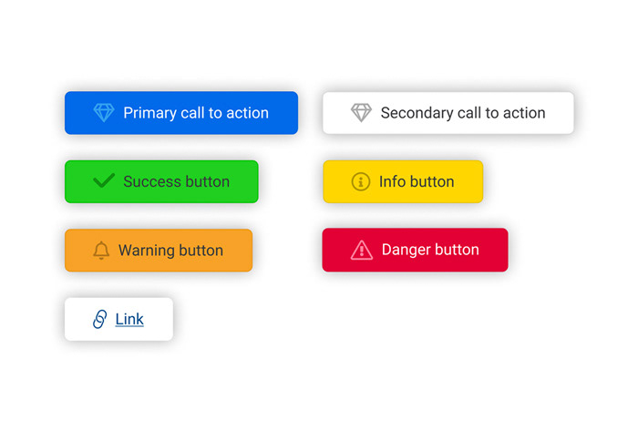
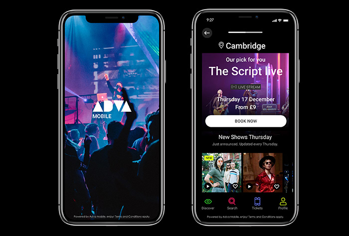
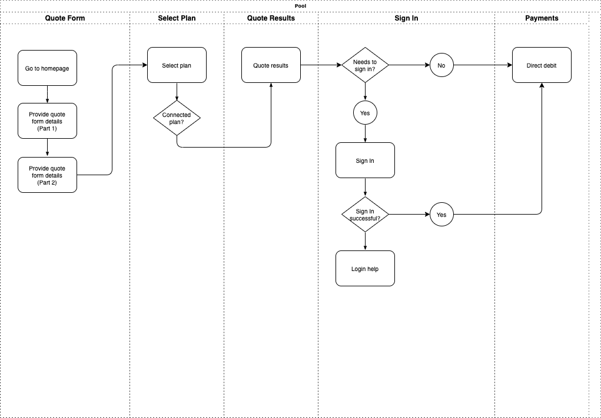
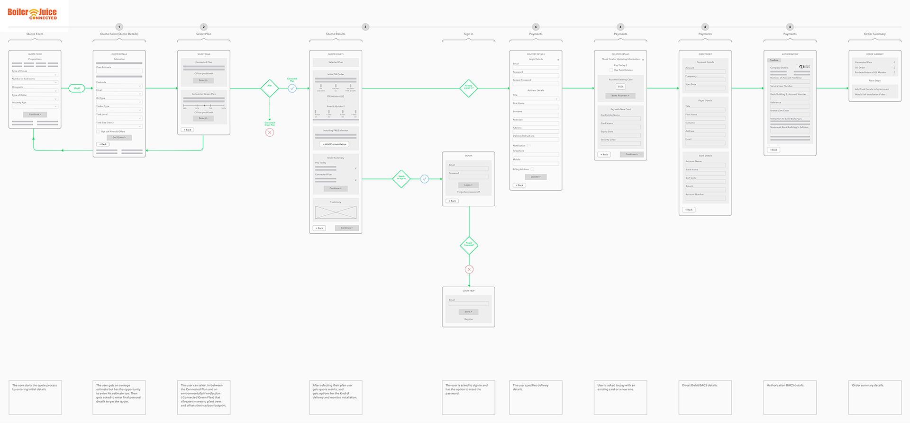
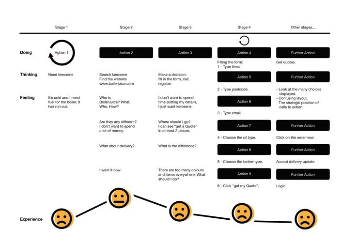

Here is a collection of examples of my work and valuable resources for enhancing your understanding and application of human-computer interaction, usability, and accessibility.
The links provided cover a wide range of topics, from foundational texts like The Encyclopedia of Human-Computer Interaction and the UXPA’s Usability Body of Knowledge, to guidelines and best practices, such as the Web Content Accessibility Guidelines (WCAG) and Apple's Human Interface Guidelines.
You'll also find information on inclusive design methodologies, assistive technologies, and essential design systems like Google’s Material Design and IBM's Carbon Design System. These resources are essential for anyone interested in improving user experience, accessibility, and interaction design in digital environments.
Figma examples
To view the example below in Figma click (please use Firefox for better results): https://www.figma.com/proto/jOJMNZIRWcZvFqefjMCKHe/Wireframing-BoilerJuice?node-id=116%3A55&scaling=min-zoom

Figma example of a wireframe created for the BoilerJuice website.
To view the example below in Figma click (please use Firefox for better results): https://www.figma.com/proto/c3uRuwBDv78KNUhhDK47Sv/UI?node-id=8%3A0&scaling=min-zoom
Basic auto layout buttons
To view the example below in Figma click (please use Firefox for better results): https://www.figma.com/proto/uzkwSRpnxdiQ9F4NBb3wac/Prototyping-in-Figma?node-id=204%3A131&scaling=scale-down
Music app example created in Figma.
  Images illustrating examples of user flows and user journey.
Useful links
- The Encyclopedia of Human-Computer Interaction, 2nd Ed.
- UXPA UK
- UXPA’s Usability Body of Knowledge
- ISO 9241 Ergonomics of Human System Interaction
- WQusability - Whitney Quesenbery
- Inclusive Design
- Government Digital Service
- Web Content Accessibility Guidelines (WCAG) 2.0
- Understanding WCAG 2.1
- Testing with assistive technologies
- Understanding disabilities and impairments: user profiles
- Accessibility checklist by 18F
- usability.gov
- Web Accessibility Tutorials
- Apple Human Interface Guidelines
- Orange.com examples
- Don Norman
- NN/g
- AbilityNet
- User Experience Professionals' Association - UXPA
- Google’s Material Design
- Apple Developer Human Interface Guidelines
- Carbon, IBM's open-source design system
- Gov Design System
- Google Design Sprints Kit
- Interaction Design Foundation
- Ideo
- Design Stanford
- Core77
- Martijn van Welie, Pattern Library, 2008